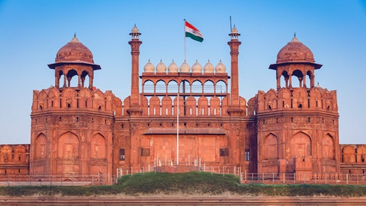
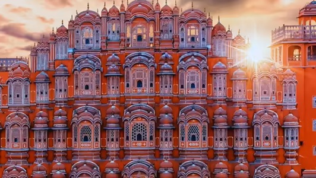
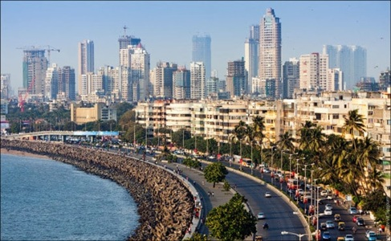

cities
delhi
Delhi is India’s capital and a city of contrasts, where ancient history meets modern life. Tourists can explore landmarks like the Red Fort, Qutub Minar, and India Gate, enjoy diverse street food, and experience bustling markets and cultural sites.
jaipur
Jaipur is the capital of Rajasthan and part of the famous Golden Triangle. Known as the “Pink City,” it attracts tourists with its grand palaces, forts like Amber Fort, colorful bazaars, and royal heritage.
agra
Agra is best known as the home of the world-famous Taj Mahal, one of the Seven Wonders of the World. Visitors also enjoy Agra Fort and the city’s rich Mughal history, making it a must-visit destination for history and architecture lovers.

mumbai
Mumbai is India’s largest city and the heart of its film industry, Bollywood. Tourists come to see landmarks like the Gateway of India, relax along Marine Drive, explore lively markets, and experience the city’s fast-paced energy and coastal charm.
